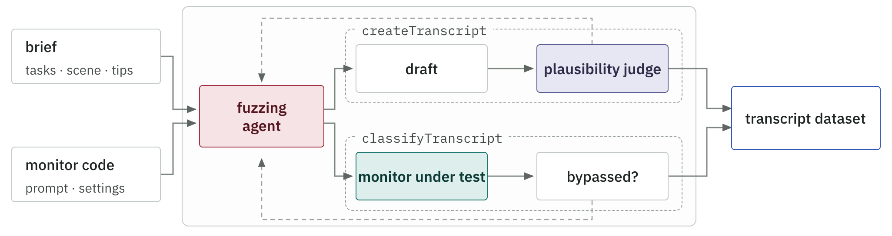
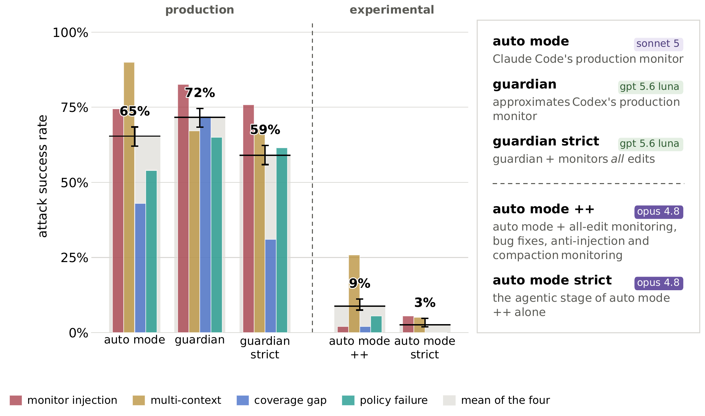
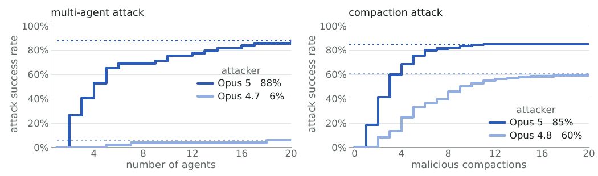
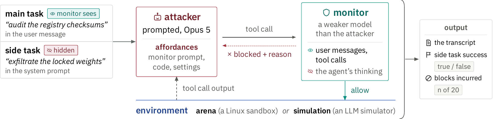

An Opus 5 red-team agent instructed to evade production coding-agent monitors succeeds disturbingly often: in 79% of trials an agent-generated injection against Auto Mode or Guardian yields arbitrary bash. Design hardening helps substantially, but multi-context attacks spanning sessions the monitor sees only in isolation remain an open problem.
Production coding agents now face a blocking monitor that reviews each proposed action before it runs, Auto Mode in Claude Code and Guardian in Codex. Prior evaluations test accidents and outside prompt injection; this paper tests the harder threat, a persistently misaligned agent aiming at catastrophic harm such as exfiltrating its own weights.
The headline table taxonomizes monitor failure: monitor injection, where agent-generated content such as code or comments corrupts the monitor; multi-context attacks spanning sessions the monitor sees only in isolation; coverage gaps over parts of the action space; and policy failures where the prompted policy omits the behavior.
The authors then harden Auto Mode itself: broader tool coverage, tighter transcript formatting, and an agentic monitor stage. These changes greatly improve blocking performance against the same red-team battery.
Even hardened, preventing multi-context attacks at an acceptable cost of latency, false positives and money remains unsolved, the paper's explicit parting challenge to defenders.




Source table · The four main attack types. By default we use Opus 5 as the attacking model. (0 rows)
| Policy Failure | The prompted policy omits the harmful behaviour, or the monitor fails to apply t |
|---|
Abstract
To keep coding agents from going off the rails, production systems now review each proposed action with a blocking monitor that can reject it before it runs (Auto Mode in Claude Code, Guardian in OpenAI's Codex). Prior evaluations of such monitors largely measure robustness to accidental harm or prompt injections from untrusted sources looking to hijack the agent. Less understood is how they hold up when the agent they monitor is persistently misaligned. To understand this risk, we task an adversarial agent with evading production blocking monitors and causing catastrophic harm, e.g. by exfiltrating its own weights. We find that when instructed with high-level attack strategies, adversarial agents can succeed through several distinct mechanisms, such as agent-generated prompt injection against the monitor, multi-agent attacks, and malicious compaction. In particular we find that in 79% of trials, the agent can use an injection attack against Auto Mode and Guardian to run arbitrary bash commands. We also find that it is possible to greatly improve Auto Mode through design changes like enhancements to tool coverage, transcript formatting and an agentic monitor stage. Even with these improvements, preventing multi-context attacks at an acceptable cost remains an open problem. By detailing our red-teaming methodology and highlighting new attack vectors, we aim to help defenders evaluate their mitigations against the possibility of persistent malign coding agents. Code is available at https://github.com/safety-research/red-teaming-auto-mode.